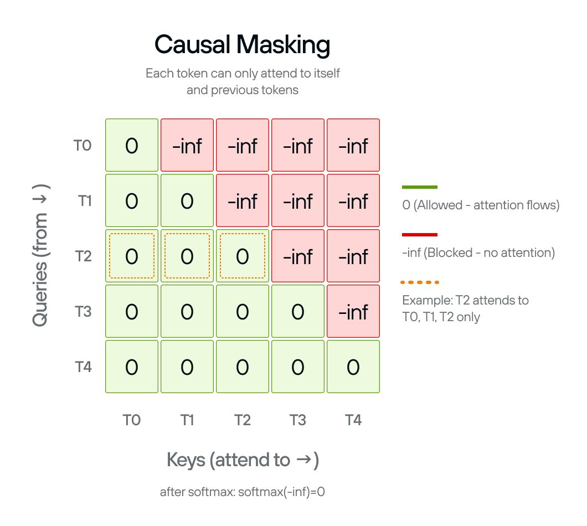
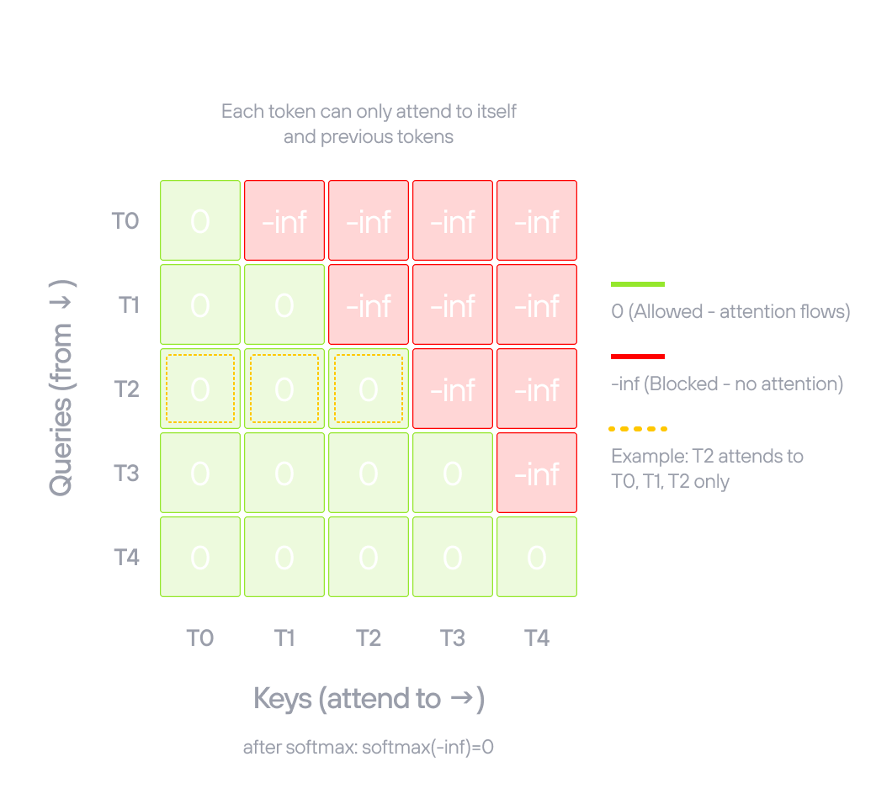

Build an LLM from scratch in MAX
Transformer models power today’s most impactful AI applications, from language models like ChatGPT to code generation tools like GitHub Copilot. If you want to understand what’s actually happening when you call an inference API, or you need to adapt one of these models for your own work, building one from scratch is the fastest path to that understanding.
This guide walks you through a complete GPT-2 implementation using the MAX Python API. You’ll start by running a working model, then build it component by component: embeddings, attention, feed-forward layers, and the serving layer that connects it all. Everything runs from the GitHub repository.
Why GPT-2?
It’s the architectural foundation for modern language models. LLaMA, Mistral, GPT-4; they’re all built on the same core components you’ll find here:
- multi-head attention
- feed-forward layers
- layer normalization
Modern variants add refinements like grouped-query attention or mixture of experts, but the fundamentals remain the same. GPT-2 is complex enough to teach real transformer architecture but simple enough to implement completely and understand deeply. When you grasp how its pieces fit together, you understand how to build any transformer-based model.
Why MAX?
Building a model for inference typically means a separate tool for each stage: one framework for model definition, another for optimization, another for serving. Each handoff is another thing to learn and another place for things to break.
MAX handles all of it in one Python API. You define the model, load weights,
run inference, and serve with max serve, all in the same environment.
The GPT-2 implementation in this guide loads pretrained weights from Hugging Face, implements the architecture, and serves text generation, all in that same environment.
How to read this book
You’ll start by serving GPT-2 with MAX, getting a working model running before
you write a line of model code. From there, you’ll build the transformer block
component by component, assemble those components into the full model, and
finish by learning how inference and serving work with max serve.
Interactive companion notebook — prefer to learn by running code? Open
notebooks/tutorial.ipynb with pixi run notebook. Each section maps to a
chapter here: you can inspect real tensor shapes, see activation visualizations,
and generate text from pretrained weights, all without leaving JupyterLab. Read
the chapters for the why; run the notebook for the how.
| Chapter | What you’ll learn |
|---|---|
| Project setup | Install MAX and clone the repository |
| Run the model | Serve GPT-2 and call the endpoint |
| Model configuration | Define the architecture hyperparameters |
| Feed-forward network | Build the position-wise MLP with GELU activation |
| Causal masking | Create attention masks that prevent looking at future tokens |
| Multi-head attention | Implement scaled dot-product attention with multiple heads |
| Layer normalization | Stabilize activations between sub-layers |
| Transformer block | Combine attention and MLP with residual connections |
| Stack transformer blocks | Build the complete 12-layer GPT-2 with embeddings |
| Language model head | Project hidden states to vocabulary logits |
| Weight adaptation | Reconcile GPT-2’s Hugging Face checkpoint with MAX’s weight layout |
| KV cache configuration | Expose attention dimensions for cache pre-allocation |
| Pipeline model | Load, compile, and execute the model inside max serve |
| Architecture registration | Declare the package to max serve and wire all pieces together |
The code is pre-written in the repository. Training is not in scope.
Start with Project setup to get your environment ready.
Set up the project
This page walks you through cloning the repository and installing the dependencies you need to follow the tutorial.
Prerequisites
This tutorial assumes the following:
- Basic Python knowledge: Classes, functions, type hints.
- Familiarity with neural networks: What embeddings and layers do (we’ll explain the specifics).
Check the MAX system requirements to confirm your platform is supported before continuing.
Install
Clone the GitHub repository and navigate to it:
git clone https://github.com/modular/max-llm-book
cd max-llm-book
Install pixi:
curl -fsSL https://pixi.sh/install.sh | sh
Install the tutorial’s dependencies:
pixi install
Next: Run the model serves GPT-2 and calls the endpoint before you write a line of model code.
Run the model
Before building GPT-2 from scratch, run it. The max serve command exposes an
OpenAI-compatible HTTP API for models you run through it, including this
tutorial’s custom GPT-2. That differs from wiring PyTorch or Hugging Face
Transformers for inference and HTTP serving yourself: you add a small
architecture package and get a live endpoint without stitching together serving,
compilation, and weight loading by hand.
You’ll see text generation working in minutes; then the build chapters explain every component that makes it work.
Start the server
Start the server with:
pixi run serve
That command runs:
max serve --custom-architectures gpt2_arch --model openai-community/gpt2 \
--no-enable-overlap-scheduler --no-device-graph-capture --force
The trailing flags pin GPT-2 to the simple serving path this tutorial targets.
For text-generation models on GPU, MAX enables two throughput optimizations by
default — the overlap scheduler and device graph capture — that both assume the
standard incremental-decode execution path. This teaching model deliberately
replays the full token sequence on every step (see
Pipeline model), so it turns both off; --force is needed
because MAX otherwise re-enables the overlap scheduler during startup.
Architecture registration covers the serving contract these
flags interact with.
On the first run, MAX downloads the pretrained GPT-2 weights from Hugging Face (≈ 548 MB) and compiles the model. Your first run might take a minute or two; later runs use cached weights and start faster. When the server is ready you’ll see:
Server ready on http://0.0.0.0:8000 (Press CTRL+C to quit)
Query the model
GPT-2 is a completion model, not a chat model. It continues text rather than
answering questions: pass it the start of a sentence and it generates what
comes next. Use the /v1/completions endpoint with a prompt field:
curl -X POST http://localhost:8000/v1/completions \
-H "Content-Type: application/json" \
-d '{
"model": "openai-community/gpt2",
"prompt": "In the beginning",
"max_tokens": 30,
"temperature": 0
}'
temperature: 0 picks the highest-probability token at each step, producing
deterministic output. Try values between 0.7 and 1.0 for more varied
completions. Or query with the Python openai client (requires
pip install openai):
from openai import OpenAI
client = OpenAI(base_url="http://localhost:8000/v1", api_key="EMPTY")
response = client.completions.create(
model="openai-community/gpt2",
prompt="In the beginning",
max_tokens=30,
temperature=0,
)
print(response.choices[0].text)
The completion text is in response.choices[0].text.
How it works
gpt2_arch/ is a custom architecture package that implements the interface
max serve expects. When you send a request, max serve tokenizes the prompt,
runs the token IDs through the compiled model graph, and samples the next token
from the output logits. It repeats that until max_tokens is reached, then
returns the detokenized completion.
gpt2_arch/
├── __init__.py # registers the architecture with max serve
├── arch.py # declares the supported model name and config
├── model_config.py # KV cache params, max sequence length
├── gpt2.py # the model architecture you build in this tutorial
├── model.py # loads weights, compiles, and serves the model
└── weight_adapters.py # adapts GPT-2 Conv1D weights to MAX format
What’s next
The next sections build the GPT-2 architecture and serving infrastructure from
scratch, component by component: the model definition, weight loading, and the
package that connects everything to max serve. Start with
Model configuration.
Model configuration
Define the GPT-2 model architecture parameters using a configuration class.
These chapters implement gpt2_arch/gpt2.py, the model class that max serve
compiles when you run the architecture package. The first thing that file needs
is a configuration object.
GPT2Config holds all the architectural decisions for GPT-2: embedding
dimensions, number of transformer layers, number of attention heads. These
parameters define the shape and capacity of the model.
OpenAI trained the original GPT-2 model with specific parameters available in the config.json file on Hugging Face. Using the exact same values lets us load OpenAI’s pretrained weights in the final step.
The configuration parameters
Each field controls a different aspect of the model:
vocab_size: Size of the token vocabulary (50,257). This number is 50,000 Byte Pair Encoding tokens + 256 byte-level tokens (fallback for rare characters) + 1 special token.n_positions: Maximum sequence length, also called the context window (1,024). Longer sequences require quadratic memory in attention.n_embd: Embedding dimension, the size of the hidden states that flow through the model (768). This determines the model’s capacity to represent information.n_layer: Number of transformer blocks stacked vertically (12). More layers allow the model to learn more complex patterns.n_head: Number of attention heads per layer (12). Multiple heads let the model attend to different types of patterns simultaneously.n_inner: Dimension of the MLP intermediate layer (optional; the transformer block defaults to 4× embedding whenNone). The 4× ratio comes from the original Attention is all you need paper.layer_norm_epsilon: Small constant for numerical stability in layer normalization (1e-5). Prevents division by zero when variance is very small.
These values define the small GPT-2 model. OpenAI released four sizes (small, medium, large, XL), each scaling these parameters up.
GPT2Config
Python’s
@dataclass decorator
eliminates boilerplate. Instead of writing __init__ manually, you declare
fields with type hints and default values:
@dataclass
class GPT2Config:
"""GPT-2 configuration matching HuggingFace"""
vocab_size: int = 50257
n_positions: int = 1024
n_embd: int = 768
n_layer: int = 12
n_head: int = 12
n_inner: int | None = None
layer_norm_epsilon: float = 1e-5
The n_inner: int | None = None field is optional. When None, the
transformer block defaults to 4× the embedding dimension (3,072). This lets you
override the inner dimension for experimental architectures without changing the
other components.
GPT2ArchConfig in model_config.py reads n_head, n_embd, and n_layer
from this config at serving time to calculate KV cache dimensions.
Next: Feed-forward network implements the MLP that processes information after attention in each transformer block.
Feed-forward network (MLP)
Build the feed-forward network, also known as a multilayer perceptron (MLP), that processes information after attention in each transformer block.
Every transformer block contains a two-layer feed-forward network. GPT2MLP
expands the embedding dimension by 4× (768 → 3,072), applies GELU activation
for non-linearity, then projects back to the original dimension.
While attention lets tokens communicate with each other, the MLP processes each position independently. Attention aggregates information through weighted sums (linear operations), but the MLP adds non-linearity through GELU activation. This combination allows the model to learn complex patterns beyond what linear transformations alone can capture.
GPT-2 uses a 4× expansion ratio because this was found to work well in the original Transformer paper and has been validated across many architectures since.
MLP operations
The MLP has three operations:
- Expansion layer (
c_fc): Projects from 768 to 3,072 dimensions, giving the network more capacity to process information. - GELU activation: Applies Gaussian Error Linear Unit, a smooth non-linear
function. GPT-2 uses
approximate="tanh"for the tanh-based approximation, which was faster when GPT-2 was first implemented and is required here to match the original pretrained weights exactly. - Projection layer (
c_proj): Projects back from 3,072 to 768 dimensions, returning to the embedding dimension so outputs can be added to residual connections.
The layer names c_fc (fully connected) and c_proj (projection) match Hugging
Face’s GPT-2 checkpoint structure. This naming is essential for loading
pretrained weights in the final step.
GPT2MLP
Linear(in_dim, out_dim, bias=True)
applies y = xW^T + b. Both layers include bias terms.
F.gelu
applies the activation between them:
class GPT2MLP(Module): # type: ignore[type-arg]
"""Exact HuggingFace GPT-2 MLP structure"""
def __init__(self, intermediate_size: int, config: GPT2Config) -> None:
embed_dim = config.n_embd
self.c_fc = Linear(embed_dim, intermediate_size, bias=True)
self.c_proj = Linear(intermediate_size, embed_dim, bias=True)
def forward(self, hidden_states: Tensor) -> Tensor:
hidden_states = self.c_fc(hidden_states)
hidden_states = F.gelu(hidden_states, approximate="tanh")
hidden_states = self.c_proj(hidden_states)
return hidden_states
The input and output both have shape [batch, seq_length, 768]. The 3,072
intermediate dimension exists only inside the MLP; the transformer block sees
the same shape going in and coming out.
Next: Causal masking prevents tokens from attending to future positions during autoregressive generation.
Causal masking
Create attention masks to prevent the model from seeing future tokens during autoregressive generation.
Self-attention, without any constraint, lets every token attend to every other token. GPT-2 generates text left-to-right, so each token must only condition on positions before it. The causal mask enforces this constraint at two distinct points in inference:
Prefill (processing the prompt): the full prompt is encoded in one parallel pass. Without a mask, later tokens in the prompt would influence earlier ones, producing attention scores that differ from what the model learned: corrupted representations from the start.
Decoding (generating new tokens): in principle, generating a single token at the end of a sequence means no future tokens exist to mask. The original GPT-2 architecture has no KV cache, so the full growing sequence is reprocessed on every step and the mask is applied on every forward pass.
The causal_mask() function creates a
mask matrix that sets
attention scores to -inf for future positions. After softmax, -inf becomes
zero probability, blocking information flow from later tokens.


The mask pattern
The mask is lower-triangular: each token can attend to itself and all earlier tokens, but not anything to its right:
- Position 0 attends to: position 0 only
- Position 1 attends to: positions 0–1
- Position 2 attends to: positions 0–2
- And so on…
The mask shape is (sequence_length, sequence_length + num_tokens). The extra
num_tokens dimension is for
KV cache compatibility: during
generation, cached keys and values from earlier tokens can be attended to
without recomputing them.
causal_mask()
The function uses the @F.functional decorator, which converts it to a MAX
graph operation that can be compiled and optimized.
The implementation creates a scalar -inf tensor, broadcasts it to the full
mask shape, then uses F.band_part to zero out the upper triangle
(num_upper=0, exclude=True keeps zeros on and below the diagonal, -inf
above):
@F.functional
def causal_mask(
sequence_length: DimLike,
num_tokens: DimLike,
*,
dtype: DType,
device: Device,
) -> Tensor:
n = Dim(sequence_length) + num_tokens
mask = Tensor(float("-inf"), dtype=dtype, device=device)
mask = F.broadcast_to(mask, shape=(sequence_length, n))
return F.band_part(mask, num_lower=None, num_upper=0, exclude=True)
The scalar -inf tensor is constructed with explicit dtype and device
arguments rather than letting MAX infer them. Passing dtype pins the mask to
exactly the same precision as the rest of the computation. Explicit device
placement ensures the scalar is allocated on the correct device from the start,
consistent with the rest of the graph.
Dim(sequence_length) + num_tokens computes the total width of the mask using
symbolic dimension arithmetic, which lets the compiled graph handle variable
sequence lengths without recompilation.
Next: Multi-head attention uses this mask inside the attention mechanism.
Multi-head attention
Implement scaled dot-product attention with multiple heads, enabling the model to attend to different representation subspaces.
GPT2MultiHeadAttention runs 12 attention operations in parallel. Instead of
computing attention once over the full 768-dimensional space, it splits the
dimensions into 12 heads of 64 dimensions each. Each head independently learns
to focus on different patterns: syntactic structure, semantic similarity,
positional relationships, and so on.
GPT-2 uses 12 heads with 768-dimensional embeddings, giving each head 768 ÷ 12 = 64 dimensions. The Q, K, V tensors are reshaped to split the embedding across heads, attention is computed for all heads in parallel via broadcasting, then the outputs are concatenated back. The whole computation happens in a single efficient sequence of tensor operations.
Head splitting and merging
Splitting transforms from [batch, seq_length, 768] to
[batch, 12, seq_length, 64]. First reshape to add the head dimension:
[batch, seq_length, 12, 64], then transpose to move heads before the sequence
dimension: [batch, 12, seq_length, 64]. Now each of the 12 heads operates
independently on its 64-dimensional subspace.
Merging reverses the process: transpose back to
[batch, seq_length, 12, 64], then reshape to flatten the head dimension:
[batch, seq_length, 768]. This concatenates all head outputs back into the
original dimension.
Scaled dot-product attention
With shape [batch, num_heads, seq_length, head_dim], computing attention for
all heads simultaneously is just a matrix multiplication across the last two
dimensions. The scaling factor 1 / sqrt(head_dim) prevents the dot products
from growing too large as head dimension increases, which would push softmax
into regions with very small gradients.
The causal mask from Causal masking is added to the attention scores before softmax, masking out future positions.
After the output projection (c_proj), the model can mix information across
heads, combining the different perspectives each head learned.
The layer names c_attn (combined Q/K/V projection) and c_proj (output
projection) match Hugging Face’s GPT-2 implementation for weight loading.
GPT2MultiHeadAttention
GPT2MultiHeadAttention combines the single c_attn projection, the split
into Q/K/V heads, scaled dot-product attention with the causal mask, and the
output projection c_proj into one class:
class GPT2MultiHeadAttention(Module): # type: ignore[type-arg]
"""Exact HuggingFace GPT-2 attention structure"""
def __init__(self, config: GPT2Config) -> None:
self.embed_dim = config.n_embd
self.num_heads = config.n_head
self.head_dim = self.embed_dim // self.num_heads
self.split_size = self.embed_dim
self.c_attn = Linear(self.embed_dim, 3 * self.embed_dim, bias=True)
self.c_proj = Linear(self.embed_dim, self.embed_dim, bias=True)
def _attn(
self,
query: Tensor | TensorValue,
key: Tensor | TensorValue,
value: Tensor | TensorValue,
) -> Tensor | TensorValue:
attn_weights = query @ key.transpose(-1, -2)
# Scale attention weights
attn_weights = attn_weights / math.sqrt(int(value.shape[-1]))
# Apply causal mask
seq_len = query.shape[-2]
mask = causal_mask(seq_len, 0, dtype=query.dtype, device=query.device)
attn_weights = attn_weights + mask
attn_weights = F.softmax(attn_weights)
attn_output = attn_weights @ value
return attn_output
def _split_heads(
self, tensor: Tensor | TensorValue, num_heads: int, attn_head_size: int
) -> Tensor | TensorValue:
"""Split the last dimension into (num_heads, head_size)"""
new_shape = list(tensor.shape[:-1]) + [num_heads, attn_head_size]
tensor = tensor.reshape(new_shape)
return tensor.transpose(-3, -2) # (batch, head, seq_length, head_features)
def _merge_heads(
self, tensor: Tensor | TensorValue, num_heads: int, attn_head_size: int
) -> Tensor | TensorValue:
"""Merge attention heads back"""
tensor = tensor.transpose(-3, -2)
new_shape = list(tensor.shape[:-2]) + [num_heads * attn_head_size]
return tensor.reshape(new_shape)
def forward(self, hidden_states: Tensor) -> Tensor:
split_result = F.split(
self.c_attn(hidden_states),
[self.split_size, self.split_size, self.split_size],
axis=2,
)
query = cast(Tensor | TensorValue, split_result[0])
key = cast(Tensor | TensorValue, split_result[1])
value = cast(Tensor | TensorValue, split_result[2])
query = self._split_heads(query, self.num_heads, self.head_dim)
key = self._split_heads(key, self.num_heads, self.head_dim)
value = self._split_heads(value, self.num_heads, self.head_dim)
attn_output = self._attn(query, key, value)
attn_output = self._merge_heads(attn_output, self.num_heads, self.head_dim)
attn_output = self.c_proj(cast(Tensor, attn_output))
return cast(Tensor, attn_output)
F.split divides the combined Q/K/V projection into three equal tensors along
the last axis. MAX’s type system requires explicit casts between Tensor and
TensorValue at certain functional boundaries, which is what the cast calls
handle. The result is a [batch, seq_length, 768] tensor where every position
has attended to all earlier positions across all 12 heads simultaneously.
Next: Layer normalization normalizes activations before each sublayer in the transformer block.
Layer normalization
Implement layer normalization to keep activations in a stable range throughout the network.
LayerNorm normalizes activations across the feature dimension. For each input
position, it computes the mean and variance across all 768 features, normalizes
to zero mean and unit variance, then applies learned weight and bias parameters
to scale and shift the result.
Unlike batch normalization, layer normalization works independently for each example, with no dependence on batch size and no running statistics to track. This makes it ideal for transformers, where batch sizes and sequence lengths vary.
GPT-2 applies layer normalization before both the attention and MLP sublayers in each transformer block (pre-normalization). This pattern stabilizes training in deep networks by keeping activations in a consistent range as gradients flow backward through 12 stacked blocks.
Layer normalization is required during inference too, not just training. The pretrained weights were optimized assuming normalized inputs at each sublayer. Skipping it would cause activations to be in completely different ranges than what the model learned, producing poor or nonsensical output.
The normalization formula
output = weight * (x - mean) / sqrt(variance + epsilon) + bias
The mean and variance are computed across all features in each example.
epsilon (1e-5) prevents division by zero when variance is very small. The
learned weight scales the normalized result and bias shifts it, initialized
to ones and zeros so the initial transformation is identity.
LayerNorm
F.layer_norm
computes the normalization and applies the learned parameters in one call. The
weight is initialized with
Tensor.ones
and the bias with
Tensor.zeros:
class LayerNorm(Module): # type: ignore[type-arg]
def __init__(self, dim: DimLike, *, eps: float = 1e-5) -> None:
self.eps = eps
self.weight = Tensor.ones([dim])
self.bias = Tensor.zeros([dim])
def forward(self, x: Tensor) -> Tensor:
return F.layer_norm(x, gamma=self.weight, beta=self.bias, epsilon=self.eps)
LayerNorm gives each transformer block two sets of learned scale and
bias parameters (one applied before attention, one before the MLP), so the
model can adjust how aggressively it normalizes at each sublayer.
Next: Transformer block combines attention, MLP, layer normalization, and residual connections into a complete transformer block.
Transformer block
Combine attention, MLP, layer normalization, and residual connections into a complete transformer block.
GPT2Block is the repeating unit of GPT-2. It wires together all the
components from the previous sections: layer normalization, multi-head
attention, and the feed-forward network, connected by residual connections.
GPT-2 stacks 12 identical copies of this block. Each refines the representation produced by the previous block, building from surface-level patterns in early layers to abstract semantic understanding in later layers.
The pre-norm pattern
Each sublayer follows the same structure: normalize first, apply the sublayer, then add the original input back:
x = x + sublayer(layer_norm(x))
This is called pre-normalization. GPT-2 uses it because normalizing before each sublayer (rather than after) gives more stable gradients in deep networks. The residual connection provides a direct path for gradients to flow backward through all 12 blocks without passing through the normalization.
The pattern happens twice per block:
- Attention:
hidden_states = attn_output + residual(whereresidualis the pre-norm input). - MLP:
hidden_states = residual + feed_forward_hidden_states.
The block maintains a constant 768-dimensional representation throughout. Input
shape [batch, seq_length, 768] is unchanged after each sublayer, which is
essential for stacking 12 blocks together.
Component names
ln_1, attn, ln_2, and mlp match Hugging Face’s GPT-2 implementation
exactly. This naming is required for loading pretrained weights.
GPT2Block
GPT2Block wires the four components (ln_1, attn, ln_2, mlp) with
pre-norm and residual connections in two passes:
class GPT2Block(Module): # type: ignore[type-arg]
"""Exact HuggingFace GPT-2 transformer block structure"""
def __init__(self, config: GPT2Config) -> None:
hidden_size = config.n_embd
inner_dim = config.n_inner if config.n_inner is not None else 4 * hidden_size
self.ln_1 = LayerNorm(hidden_size, eps=config.layer_norm_epsilon)
self.attn = GPT2MultiHeadAttention(config)
self.ln_2 = LayerNorm(hidden_size, eps=config.layer_norm_epsilon)
self.mlp = GPT2MLP(inner_dim, config)
def forward(self, hidden_states: Tensor) -> Tensor:
residual = hidden_states
hidden_states = self.ln_1(hidden_states)
attn_output = self.attn(hidden_states)
hidden_states = attn_output + residual
residual = hidden_states
hidden_states = self.ln_2(hidden_states)
feed_forward_hidden_states = self.mlp(hidden_states)
hidden_states = residual + feed_forward_hidden_states
return hidden_states
The block reads input at 768 dimensions, normalizes and applies attention with a residual, then normalizes and applies the MLP with another residual. Input and output shapes are identical, which is what makes stacking 12 of them possible.
Next: Stack transformer blocks stacks 12 of these blocks with embeddings to create the main body of the GPT-2 model.
Stack transformer blocks
Stack 12 transformer blocks with embeddings and final normalization to create the complete body of the GPT-2 model.
MaxGPT2Model is the body of GPT-2. It converts raw token IDs to embeddings,
adds position information, passes through all 12 transformer blocks, and
normalizes the final output.
The model processes input in four stages:
- Token embeddings: Convert each token ID to a 768-dimensional vector via a learned lookup table with 50,257 entries.
- Position embeddings: Add a learned position vector for each token’s position (0 to 1,023). These are added element-wise to the token embeddings so the model knows token order.
- Transformer blocks: Pass through 12 identical
GPT2Blocklayers sequentially. Each block refines the representation. - Final layer norm: Normalize the output before the language model head.
Layer depth
GPT-2 uses 12 layers because this depth allows complex pattern learning while remaining trainable. Early layers tend to capture surface-level patterns like word shapes and punctuation; later layers capture higher-level semantic patterns. The representations from all layers contribute to the final output.
Module composition
Sequential
chains the 12 transformer blocks in order, passing each block’s output to the
next. The * in
Sequential(*(GPT2Block(config) for _ in range(config.n_layer))) unpacks the
generator as positional arguments.
Tensor.arange
generates position indices [0, 1, ..., seq_length-1] matching the input’s
dtype and device so they’re compatible for embedding lookup.
Embedding(vocab_size, dim)
is used for both token and position embeddings.
MaxGPT2Model
MaxGPT2Model combines token embeddings, position embeddings, 12 transformer
blocks, and final layer normalization into the complete model body:
class MaxGPT2Model(Module): # type: ignore[type-arg]
def __init__(
self,
config: GPT2Config,
) -> None:
self.wte = Embedding(config.vocab_size, dim=config.n_embd)
self.wpe = Embedding(config.n_positions, dim=config.n_embd)
self.h = Sequential(*(GPT2Block(config) for _ in range(config.n_layer)))
self.ln_f = LayerNorm(config.n_embd, eps=config.layer_norm_epsilon)
def forward(self, input_ids: Tensor) -> Tensor:
_, seq_length = input_ids.shape
tok_embeds = self.wte(input_ids)
pos_embeds = self.wpe(
Tensor.arange(seq_length, dtype=input_ids.dtype, device=input_ids.device)
)
x = tok_embeds + pos_embeds
x = self.h(x)
x = self.ln_f(x)
return x
The _ in _, seq_length = input_ids.shape discards the batch dimension; only
the sequence length is needed to generate position indices. The output is a
[batch, seq_length, 768] tensor: one contextualized representation per token
position, ready for the language model head to project into vocabulary logits.
Next: Language model head adds the final projection layer that maps these 768-dimensional hidden states to vocabulary logits.
Language model head
Add the final linear projection layer that converts hidden states to vocabulary logits for next-token prediction.
MaxGPT2LMHeadModel wraps the transformer body with a single linear layer that
projects 768-dimensional hidden states to 50,257-dimensional vocabulary logits.
This completes the GPT-2 model architecture. The next sections cover the serving
package that loads pretrained weights and connects the model to max serve.
The projection
For each position in the sequence, the language model head outputs a score for every possible next token. Higher scores mean the model thinks that token is more likely to come next. These scores are called logits, raw values before softmax, which can be any real number.
The layer uses bias=False, omitting the bias vector. Layer normalization
before the head already centers the activations, so a constant bias adds
nothing to the relative scores after softmax. Omitting it saves 50,257
parameters.
At 768 × 50,257 = 38.6M parameters, the LM head contains the largest single
weight matrix in GPT-2, larger than any individual weight matrix in the
transformer blocks (the biggest of which, c_fc, is 768 × 3,072 ≈ 2.4M).
The complete model pipeline
With the LM head, the full data flow is:
| Stage | Shape |
|---|---|
| Input token IDs | [batch, seq_length] |
| Token + position embeddings | [batch, seq_length, 768] |
| 12 transformer blocks | [batch, seq_length, 768] |
| Final layer norm | [batch, seq_length, 768] |
| LM head | [batch, seq_length, 50257] |
Each position gets independent logits over the vocabulary. To predict the next token after position i, look at the logits at position i. The highest-scoring token is the model’s top prediction.
MaxGPT2LMHeadModel
MaxGPT2LMHeadModel wraps MaxGPT2Model with a single linear projection from
hidden states to vocabulary logits:
class MaxGPT2LMHeadModel(Module): # type: ignore[type-arg]
"""Exact HuggingFace GPT-2 model structure"""
def __init__(self, config: GPT2Config) -> None:
self.config = config
self.transformer = MaxGPT2Model(config)
self.lm_head = Linear(config.n_embd, config.vocab_size, bias=False)
def forward(self, input_ids: Tensor) -> Tensor:
input_ids = self.transformer(input_ids)
return self.lm_head(input_ids)
The forward method reuses the parameter name input_ids for the transformer
output; by the time the LM head runs, it holds hidden states rather than IDs,
but the name reflects its origin.
model.py in gpt2_arch/ compiles this class directly. The same
MaxGPT2LMHeadModel you’ve just read is what max serve runs.
Next: Weight adaptation covers the three mappings that load GPT-2’s Hugging Face checkpoint into MAX’s typed parameter interface.
Weight adaptation
How MAX’s typed parameter interface works, and the three mappings that load GPT-2’s Hugging Face checkpoint into it.
compile(weights=state_dict) maps a dict[str, WeightData] to the named
parameters in your module. Each key must match a parameter name exactly, and
each value must carry the right shape for that parameter. MAX enforces this at
compile time: a mismatched name leaves a parameter uninitialized; a mismatched
shape fails the compile.
The adapter produces the dict[str, WeightData] that compile() requires.
Three things satisfy that contract for GPT-2: key renaming to match MAX’s
module hierarchy, matrix transposition to match Linear’s declared shape,
and an explicit copy of the tied embedding weight the checkpoint omits.
MAX’s typed parameter interface
MAX modules declare parameters by name through the class hierarchy.
MaxGPT2LMHeadModel contains a MaxGPT2Model called transformer, which
contains a list of MaxGPT2Block layers under h, each with a
MaxGPT2Attention called attn, and so on. When MAX loads weights, it walks
this hierarchy to construct the expected parameter names:
transformer.h.0.attn.c_attn.weight, transformer.h.0.ln_1.weight,
lm_head.weight.
WeightData.from_numpy(arr, name)
binds an array to one of those names. The adapter builds the output dict by
producing one
WeightData
per parameter, with the name MAX expects and an array in the shape MAX expects.
That’s the entire contract: name and shape.
For any model you bring up in MAX, this is the same pattern: declare your
modules, identify the checkpoint’s naming and layout conventions, and write an
adapter that produces dict[str, WeightData] with the keys and shapes your
modules declare. The adapter is the explicit boundary between what a checkpoint
provides and what MAX’s typed parameter interface requires.
Checkpoint mappings
Key naming: The Hugging Face checkpoint stores keys without the top-level
module name: h.0.ln_1.weight. MAX expects transformer.h.0.ln_1.weight. The
adapter prepends transformer. to any key that doesn’t already have the prefix.
Shape alignment: OpenAI trained GPT-2 with a custom Conv1D layer that
stores weight matrices as [in_features, out_features]. MAX’s Linear
declares its weight as [out_features, in_features]. Three layers are
affected: c_attn (the combined Q/K/V projection), c_proj (the attention
output projection), and c_fc (the MLP expansion). The adapter transposes
these before wrapping them in WeightData. All other weight matrices are
already in the right layout.
Tied weight: GPT-2’s safetensors file doesn’t include lm_head.weight.
The language model head shares its weight matrix with the token embedding
table, so the checkpoint omits it to save 38.6M parameters on disk. MAX’s
module declares lm_head.weight as a distinct named parameter, so the adapter
adds it by copying transformer.wte.weight into a new array under the
lm_head.weight key.
The adapter copies each weight into a fresh NumPy array rather than wrapping
the original buffer. GPT-2’s weights arrive as memory-mapped safetensors
buffers, read-only views into the file. compile() requires contiguous,
writable memory; _to_numpy() ensures that requirement is always met.
Two keys per transformer block are skipped entirely: .attn.bias and
.attn.masked_bias. These are pre-computed causal mask buffers, not trainable
parameters. The model computes its own causal mask at runtime from
causal_mask().
The adapter
convert_safetensor_state_dict() applies all three operations in a single
pass over the checkpoint keys:
from __future__ import annotations
import numpy as np
from max.graph.weights import WeightData, Weights
# Layer name suffixes that use Conv1D and need transposing
_CONV1D_LAYERS = ("c_attn", "c_proj", "c_fc")
# Keys in the safetensors that are causal-mask buffers, not parameters.
_SKIP_SUFFIXES = (".attn.bias", ".attn.masked_bias")
def _to_numpy(wd: WeightData) -> np.ndarray:
# np.from_dlpack() reads via DLPack; np.array() then copies into new,
# contiguous, writable memory — required by compile().
return np.array(np.from_dlpack(wd))
def convert_safetensor_state_dict(
state_dict: dict[str, Weights],
**unused_kwargs,
) -> dict[str, WeightData]:
result: dict[str, WeightData] = {}
for key, value in state_dict.items():
# Skip causal-mask buffers — they are not model parameters.
if any(key.endswith(suffix) for suffix in _SKIP_SUFFIXES):
continue
mapped_key = key if key.startswith("transformer.") else f"transformer.{key}"
arr = _to_numpy(value.data())
# Conv1D stores [in, out]; MAX Linear expects [out, in].
if any(layer in mapped_key for layer in _CONV1D_LAYERS) and mapped_key.endswith(
".weight"
):
arr = np.ascontiguousarray(arr.T)
result[mapped_key] = WeightData.from_numpy(arr, mapped_key)
# GPT-2 small: lm_head weight is tied to wte; add it explicitly.
wte_key = "transformer.wte.weight"
if "lm_head.weight" not in result and wte_key in result:
wte_arr = np.array(result[wte_key].data)
result["lm_head.weight"] = WeightData.from_numpy(wte_arr, "lm_head.weight")
return result
The transpose condition checks two things: the key ends in .weight, and it
contains one of the three Conv1D layer names. Bias vectors, stored as
[out_features] in both conventions, don’t need transposing; only the weight
matrices do.
Next: KV cache configuration covers model_config.py,
which tells the serving layer how much cache to allocate before the first
token runs.
KV cache configuration
What the serving layer needs to know about GPT-2’s attention layout before
the first token runs, and how model_config.py provides it.
GPT-2 doesn’t use a KV cache. Every decode step re-processes the full token sequence from position 0, so there’s nothing to cache between steps. The serving interface requires cache dimensions regardless.
PipelineModelWithKVCache,
the base class GPT2PipelineModel extends, requires an architecture config that
exposes cache dimensions regardless. MAX uses those dimensions to allocate cache
space as part of its serving infrastructure. GPT2ArchConfig satisfies that
interface; the cache is allocated, but GPT-2’s forward pass never reads from or
writes to it.
Why MAX requires this interface
Generating each new token requires attending to all previous tokens. Without a cache, every decode step recomputes key and value tensors for the full token history: a 10-token sequence becomes 11 on the next decode step, 12 on the step after, and so on. A KV cache breaks this growth: it stores the key and value tensors produced at each step so subsequent steps can read prior context directly instead of recomputing it. Each new step processes only the one new token.
PipelineModelWithKVCache is designed around this pattern. Before the first
token runs, the framework allocates cache storage for the entire model: one slot
per layer, per head, per position up to the maximum sequence length. To do that
it needs the cache dimensions upfront. That’s exactly what
ArchConfigWithAttentionKVCache
requires your config to provide: how many layers, how many KV heads, how large
each head is, and the maximum sequence length.
For GPT-2 here, the cache is allocated but never used. The forward pass recomputes every key and value tensor from scratch on each step, which works for a small model with short sequences. In a production model, re-processing the full history on every step makes generation quadratically more expensive as context grows and limits how many requests the server can handle concurrently.
When you bring up a model that uses an incremental KV cache, you’d keep the same
config structure and add cache reads and writes to the forward pass.
KVCacheInputs
are passed into each decode step, and the framework manages cache lifetimes
across requests. When your forward pass reads and writes that cache, each step
processes only the one new token. The four properties below are the same in both
cases; implementing the cache is what makes a model ready to serve at scale.
Cache dimensions
num_layers: is the number of transformer blocks: 12 for GPT-2 small.
Each block produces its own key and value tensors, so the cache has 12 layers.
num_key_value_heads: is the number of key-value pairs per attention
layer. GPT-2 uses plain multi-head attention, where every query head has its own
key and value head, so this equals n_head (12). Models with grouped-query
attention (GQA) return a smaller number here. LLaMA 3.1 8B has 32 query heads
but only 8 KV heads; fewer KV heads means a smaller cache.
head_dim: is the feature size of each head: n_embd // n_head = 768 ÷
12 = 64. This is the depth of each cached key and value tensor.
model_max_seq_len: is the upper bound on token sequence length. GPT-2’s
context window is 1,024 tokens (n_positions).
The configuration class
GPT2ArchConfig extends
ArchConfigWithAttentionKVCache,
which handles the cache allocation machinery. The subclass reads each dimension
from the Hugging Face config object:
from __future__ import annotations
from dataclasses import dataclass
from max.pipelines.lib.interfaces.arch_config import (
ArchConfigWithAttentionKVCache,
)
@dataclass
class GPT2ArchConfig(ArchConfigWithAttentionKVCache):
@property
def num_key_value_heads(self) -> int:
"""GPT-2 uses plain MHA: n_kv_heads == n_head."""
return self.huggingface_config.n_head # type: ignore[union-attr]
@property
def head_dim(self) -> int:
hf = self.huggingface_config
return hf.n_embd // hf.n_head # type: ignore[union-attr]
@property
def num_layers(self) -> int:
return self.huggingface_config.n_layer # type: ignore[union-attr]
@property
def model_max_seq_len(self) -> int:
return self.huggingface_config.n_positions # type: ignore[union-attr]
Next: Pipeline model covers model.py, which loads the
compiled model, runs it, and manages the token sequence between decode steps.
Pipeline model
How model.py loads the compiled GPT-2 graph, runs it on each decode step,
and manages the growing token sequence.
To extend a pipeline and connect it to a serving layer, you’ll need to subclass
PipelineModelWithKVCache
and tell it how to load your model, run each decode step, and manage the token
sequence.
Load the model
Every
Linear
and
Embedding
layer in MaxGPT2LMHeadModel allocates tensors when constructed. Without the
lazy context, those allocations fill with random values and are immediately
discarded when the checkpoint loads.
F.lazy()
defers all allocation inside the block: layers are declared, but nothing is
allocated until compile() runs.
default_device()
and
default_dtype()
set context variables that module construction code reads inside the lazy block,
so layers pick up the right device and numeric type without being passed them
explicitly.
compile()
runs outside the lazy block. Loading safetensors buffers inside
F.lazy()
triggers the same memory alignment error that _to_numpy() in
weight_adapters.py solves by copying into a fresh array. Passing
weights=state_dict to compile() loads and compiles in one step after the
lazy context closes:
def _load_model(
self,
weights: Weights,
adapter: WeightsAdapter | None,
) -> Any:
hf_config = self.huggingface_config
device = self.devices[0]
state_dict = parse_state_dict_from_weights(
self.pipeline_config, weights, adapter
)
with F.lazy(), default_device(device), default_dtype(self.dtype):
gpt2_module = MaxGPT2LMHeadModel(hf_config)
gpt2_module.to(device)
token_type = TensorType(DType.int64, ("batch", "seq_len"), device=device)
return gpt2_module.compile(token_type, weights=state_dict)
Execute a step
execute() receives a GPT2Inputs, a dataclass with one field: tokens,
a [1, seq_len] int64 Buffer containing all token IDs for the current
sequence.
Tensor.from_dlpack()
converts the driver Buffer to a MAX Tensor without copying. The compiled
model returns [1, seq_len, vocab_size]: one logit vector per position. Only
the final position’s logits are needed to sample the next token, so the output
is narrowed to [1, vocab_size] before being handed to MAX’s serving
infrastructure, which handles sampling: temperature scaling, top-p filtering,
and token selection:
def execute(self, model_inputs: ModelInputs) -> ModelOutputs:
assert isinstance(model_inputs, GPT2Inputs)
input_tensor = Tensor.from_dlpack(model_inputs.tokens).to(self.devices[0])
all_logits: Tensor = self.model(input_tensor)
last_logits_np: np.ndarray = np.from_dlpack(all_logits.to(CPU()))
last_logits_np = np.ascontiguousarray(last_logits_np[0, -1:, :])
last_buf = Buffer.from_numpy(last_logits_np).to(self.devices[0])
return ModelOutputs(logits=last_buf, next_token_logits=last_buf)
Manage the token sequence
On the first step (prefill), prepare_initial_token_inputs() reads the full
prompt from ctx.tokens.all and packages it as GPT2Inputs. On each decode
step, prepare_next_token_inputs() appends the newly sampled token to the
previous token array and returns the extended sequence.
Because GPT-2 has no incremental KV cache, every decode step re-processes the full token history from position 0. Generating 30 tokens from a 10-token prompt means the 11th decode step processes 20 tokens, the 12th processes 21, and so on. The implementation stays simple at the cost of efficiency: compute grows linearly with sequence length.
def prepare_initial_token_inputs(
self,
replica_batches: Sequence[Sequence[TextContext]],
kv_cache_inputs: KVCacheInputsInterface[Buffer, Buffer] | None = None,
return_n_logits: int = 1,
) -> GPT2Inputs:
_ = return_n_logits # PipelineModel API; last-token logits only in `execute`.
ctx = replica_batches[0][0]
token_ids = _tokens_from_context(ctx)
inputs = _make_gpt2_inputs(token_ids, self.devices[0])
inputs.kv_cache_inputs = kv_cache_inputs
return inputs
Next: Architecture registration covers arch.py and
__init__.py, the three-line contract that plugs the whole package into
max serve.
Architecture registration
How arch.py and __init__.py plug the serving package into max serve,
and what each field in SupportedArchitecture controls.
When you run max serve --custom-architectures gpt2_arch, max serve imports
the package and reads the ARCHITECTURES list, which adds GPT-2 to its model
registry.
The package entry point
__init__.py states the contract:
from .arch import gpt2_arch
ARCHITECTURES = [gpt2_arch]
__all__ = ["ARCHITECTURES", "gpt2_arch"]
The architecture declaration
arch.py assembles the
SupportedArchitecture
that MAX registers. Each field tells the serving layer something it needs before
a request arrives:
from __future__ import annotations
from max.graph.weights import WeightsFormat
from max.pipelines.context import TextContext
from max.pipelines.lib import SupportedArchitecture, TextTokenizer
from max.pipelines.modeling.types import PipelineTask
from . import weight_adapters
from .model import GPT2PipelineModel
from .model_config import GPT2ArchConfig
gpt2_arch = SupportedArchitecture(
# Must match the HuggingFace config "architectures" field
name="GPT2LMHeadModel",
task=PipelineTask.TEXT_GENERATION,
example_repo_ids=["gpt2", "openai-community/gpt2"],
default_weights_format=WeightsFormat.safetensors,
default_encoding="float32",
supported_encodings={"float32"},
pipeline_model=GPT2PipelineModel,
tokenizer=TextTokenizer,
context_type=TextContext,
multi_gpu_supported=False,
rope_type="none",
weight_adapters={
WeightsFormat.safetensors: weight_adapters.convert_safetensor_state_dict,
},
config=GPT2ArchConfig,
required_arguments={"enable_prefix_caching": False},
)
name: must match the "architectures" field in Hugging Face’s
config.json exactly. When you run max serve --model openai-community/gpt2,
MAX downloads the model, reads config.json, and looks up that name in its
registry. A mismatch means the package never loads.
weight_adapters: maps each
WeightsFormat
to a conversion function. When MAX loads the safetensors checkpoint, it calls
weight_adapters.convert_safetensor_state_dict to produce the layout
MaxGPT2LMHeadModel expects.
tokenizer: is
TextTokenizer,
which wraps the Hugging Face tokenizer for the model. Before any token is
processed, max serve calls it to convert the prompt to token IDs and, after
generation, decode the output IDs back to text.
config: points to GPT2ArchConfig, which provides the KV cache
dimensions covered in KV cache configuration.
required_arguments: is a hard constraint on the serving layer:
enable_prefix_caching: False prevents max serve from enabling prefix
caching for this model. GPT-2 passes the full token sequence on every decode
step rather than using an incremental KV cache, so prefix caching doesn’t
apply.
Two more constraints live on the max serve command line rather than in
required_arguments — that’s why the serve command ends
with --no-enable-overlap-scheduler --no-device-graph-capture --force. For
text-generation models on GPU, MAX enables the overlap scheduler and device
graph capture by default to raise throughput, but both expect the standard
incremental-decode path. Because this model replays the full sequence on every
step (the same reason prefix caching doesn’t apply), the serve command disables
them. --force is required because MAX otherwise re-enables the overlap
scheduler during startup.
What you’ve built
You’ve built two complete layers of an LLM serving system and wired them together.
The first layer is the model: everything from token embeddings through the language model head, compiled to a MAX graph. The second layer is the serving infrastructure: a weight adapter that maps Hugging Face checkpoints to MAX’s layout, a config class that tells the serving layer how much KV cache to allocate, and a pipeline model that loads, compiles, and executes the graph on demand.
Any max.experimental.nn.Module follows the same pattern to get from model
weights to a live endpoint:
- Implement the model with
max.experimental.nn - Adapt the weights with a
WeightsFormatconverter - Expose cache dimensions with an
ArchConfigWithAttentionKVCachesubclass - Wrap execution in a
PipelineModelWithKVCachesubclass - Register the package as a
SupportedArchitectureand pass--custom-architecturestomax serve
Modern LLMs build on these same components with targeted refinements:
- Grouped-query attention (GQA): share key-value pairs across multiple query heads to reduce memory, as in LLaMA.
- Rotary position embeddings (RoPE): replace learned position embeddings with rotation-based encoding for better length generalization.
- SwiGLU activation: swap GELU for the gated linear unit variant used in LLaMA and Mistral.
- Incremental KV cache: cache key and value tensors across decode steps so each step processes only the new token instead of the full sequence.
Each builds directly on what you’ve read here.
Run the model to see it in action.